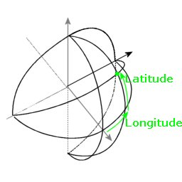
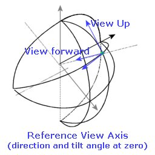
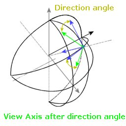
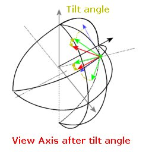
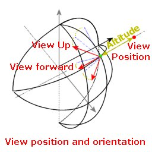

org.ptolemy3d.view
Class Camera
java.lang.Object
 org.ptolemy3d.view.Camera
org.ptolemy3d.view.Camera
public class Camera
- extends java.lang.Object
Coordinate System
The view position is defined with the position (longitude, latitude, altitude, direction, tilt).
The longitude and latitude components are angles in the ranges respectively [-180°;180°] and [-90°;90°].
Those two angles define every position on the globe.

Longitude / Latitude angles
The view always look towards that position, but from any possible orientation.
The view orientation is describe with the two angles (direction, tilt).
The reference view orientation is as follow: the view up direction is tangent to the longitude line, the view forward is in direction to the globe center.
The view vectors are represented on the next picture:

The first angle direction defines the rotation around the vertical (upward) direction:

The second angle tilt is the rotation around the side vector:

Finally the altitude tell how far we are from the position on the globe, along the view forward vector.
This last picture represents the view vectors and the view position:

Positioning
View movements are controlled in the coordinate system describe in the previous paragraph.
View movements is controlled from CameraMovement, for more information, see the CameraMovement documentation.
Sometimes you'll may find usefull to convert that position into another coordinate system.
You can get the equivalent cartesian coordinates (x,y,z), using the method getCartesianPosition.
Axis system of cartesian coordinate system is shown in the final picture:
- See Also:
CameraMovement,
getCartesianPosition(double[])
| Methods inherited from class java.lang.Object |
equals, getClass, hashCode, notify, notifyAll, wait, wait, wait |
cameraX
public double cameraX
cameraY
public double cameraY
cameraPos
public double[] cameraPos
- Cartesian position
vpMat
public Matrix9d vpMat
cameraMat
public Matrix9d cameraMat
cameraMatInv
public Matrix16d cameraMatInv
Camera
public Camera(Ptolemy3D ptolemy)
getLongitudeDegrees
public final double getLongitudeDegrees()
- Returns:
- longitude in degrees.
getLongitudeDD
public final double getLongitudeDD()
- Returns:
- longitude in DD.
getLatitudeDegrees
public final double getLatitudeDegrees()
- Returns:
- latitude in degrees.
getLatitudeDD
public final double getLatitudeDD()
- Returns:
- latitude in DD.
getAltitude
public final double getAltitude()
- Returns:
- the altitude in view space (altitude axis may not be vertical), zero is the altitude of the ground with no elevation.
getAltitudeDD
public final double getAltitudeDD()
- Returns:
- the altitude in view space (altitude axis may not be vertical), zero is the altitude of the ground with no elevation.
getVerticalAltitudeMeters
public final double getVerticalAltitudeMeters()
- Returns:
- the altitude in world space (vertical altitude), zero is the altitude of the ground with no elevation.
getDirectionDegrees
public final double getDirectionDegrees()
- Returns:
- direction: unit is degrees.
getDirectionRadians
public final double getDirectionRadians()
- Returns:
- direction: unit is radians.
getPitchDegrees
public final double getPitchDegrees()
- Returns:
- pitch (tilt): unit is degrees.
getPitchRadians
public final double getPitchRadians()
- Returns:
- pitch (tilt): unit is radians.
getCartesianPosition
public final void getCartesianPosition(double[] position)
- Parameters:
position - destination array to write cartesian position in.
toString
public java.lang.String toString()
- Overrides:
toString in class java.lang.Object
- Returns:
- the position in the view coordinate system